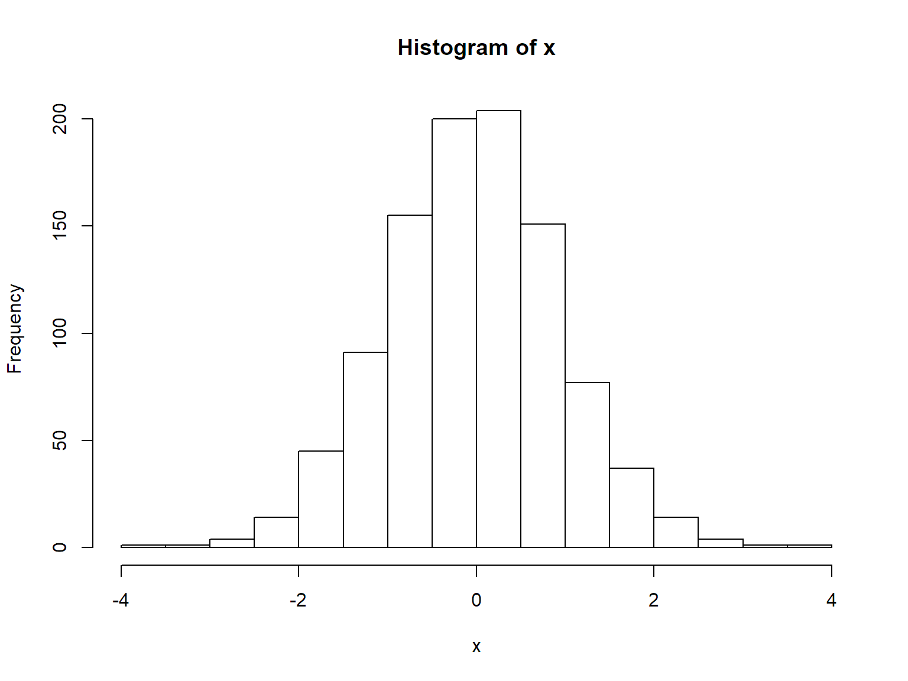

R Syntax
2 + 2 # add numbers## [1] 42 * pi # multiply by a constant## [1] 6.2831857 + runif(1) # add a random number## [1] 7.2489353^4 # powers## [1] 81sqrt(4^4) # functions## [1] 16log(10)## [1] 2.302585log(100, base = 10)## [1] 223 %/% 2 ## [1] 1123 %% 2## [1] 1# scientific notation
5000000000 * 1000## [1] 5e+125e9 * 1e3## [1] 5e+12Think of a mathematical operation you need - can you guess how to do it in R?
A key action in R is to store values in the form of variables (also called objects). We can use the '=' or '<-' operators to do this.
y <- 3^3Note when you assign a value to a variable, R doesn't print the result to the console. To see the value of a variable, simply type it by itself.
y## [1] 27Pretty much anything can be saved to a variable. Here we save some text and dates.
flv <- "vanilla"
flv## [1] "vanilla"start_date <- Sys.Date()
start_date## [1] "2018-05-02"The rules for naming variables are pretty flexible. You can use numbers, letters, and most special characters. There are a couple of rules to take note of:
Naming Styles
There are a handful of popular naming styles. Pick one that you like, and be consistent!
| Style | Example |
|---|---|
| alllowercase | adjustcolor |
| period.separated | shoe.size |
| underscore_separated | numeric_version |
| lowerCamelCase | addTaskCallback |
| UpperCamelCase | SignatureMethod |
If you're starting to type something you've typed before, or the long name of an R object or function, STOP! You likely don't need to type all of that.
source(). For example: source('myRcodeFile.R')Question: Are there other tricks that anyone knows of?
The most basic form of an R object is a vector. In fact, individual (scalar) values are vectors of length one.
We can concatenate values into a vector with c().
## numeric vector
nums <- c(1.1, 3, -5.7)
devs <- rnorm(5)
devs## [1] 1.433694 -0.816734 1.214193 -1.988716 0.882661## integer vector
ints <- c(1L, 5L, -3L) # force storage as integer not decimal number
## 'L' is for 'long integer' (historical)
idevs <- sample(ints, 100, replace = TRUE)
## character vector
chars <- c('hi', 'hallo', "mother's", 'father\'s',
"She said, 'hi'", "He said, \"hi\"" )
chars## [1] "hi" "hallo" "mother's" "father's"
## [5] "She said, 'hi'" "He said, \"hi\""cat(chars, sep = "\n")## hi
## hallo
## mother's
## father's
## She said, 'hi'
## He said, "hi"## logical vector
bools <- c(TRUE, FALSE, TRUE)
bools## [1] TRUE FALSE TRUESequences of numbers are useful for all sorts of things such as setting up loops and data wrangling. The seq() function has a full set of arguments to make sequences, or you can use the : operator if you just need a set of sequential integers.
mySeq <- 1:6
mySeq## [1] 1 2 3 4 5 6myOtherSeq <- seq(1, 11, by = 2)
myOtherSeq## [1] 1 3 5 7 9 11length(myOtherSeq)## [1] 6fours <- rep(4, 6)
fours## [1] 4 4 4 4 4 4## This is a comment: here is an example of non-numeric data
depts <- c('espm', 'pmb', 'stats')
depts## [1] "espm" "pmb" "stats"R has a number of random number generators. We've already seen the runif() function which generates continuous random numbers along a uniform distribution. The rnorm() function is similar but it generates normally distributed numbers.
x <- round(10 * runif(1000))
table(x)## x
## 0 1 2 3 4 5 6 7 8 9 10
## 48 101 106 92 101 109 93 86 101 113 50x <- rnorm(1000)
hist(x)
Vectors can be incredibly convenient and greatly simplify your code. However you often don't want all of the elements in a vector. Fortunately R provides a convenient way to extract specific elements from a vector using square-bracket notation. There are three ways you use square brackets.
If you pass a vector of integers in the square brackets, R will take them to be the indices of the element(s) you want returned.
vals <- seq(2, 12, by = 2)
vals## [1] 2 4 6 8 10 12vals[3]## [1] 6vals[3:5]## [1] 6 8 10vals[c(1, 3, 6)]## [1] 2 6 12Challenge question: what happens if you pass a negative integer? [Ans].
Negative integers tell R to omit those elements.
x <- LETTERS[1:5]
x[-2]## [1] "A" "C" "D" "E"The second way to extract element(s) from a vector is to pass a vector of TRUE/FALSE values in the square brackets. R will return the elements corresponding to the TRUE values (assuming the TRUE/FALSE values are in the same order as the elements of the vector).
vals## [1] 2 4 6 8 10 12vals[c(T,F,F,F,T,T)]## [1] 2 10 12The is really the same as option #2, but instead of instead of creating the vector of Booleans as a separate object you enter an expression generates them on-the-fly.
x <- 1:10
x[ x > 5 ]## [1] 6 7 8 9 10x[ x %% 2 == 0 ]## [1] 2 4 6 8 10"Hello" == "Hello"## [1] TRUE"GoodBye" == "goodbye"## [1] FALSEmean(1:5)## [1] 3## Mean(1:5) - will throw an error: could not find function "Mean"